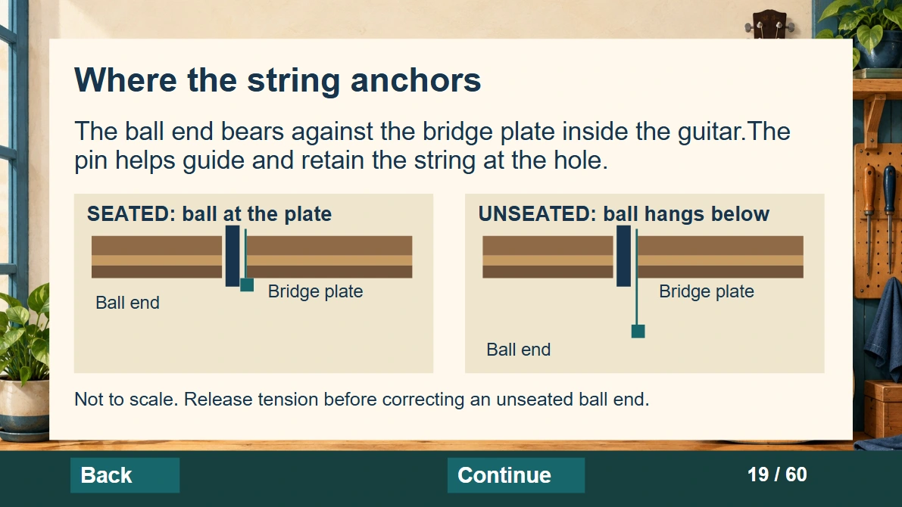
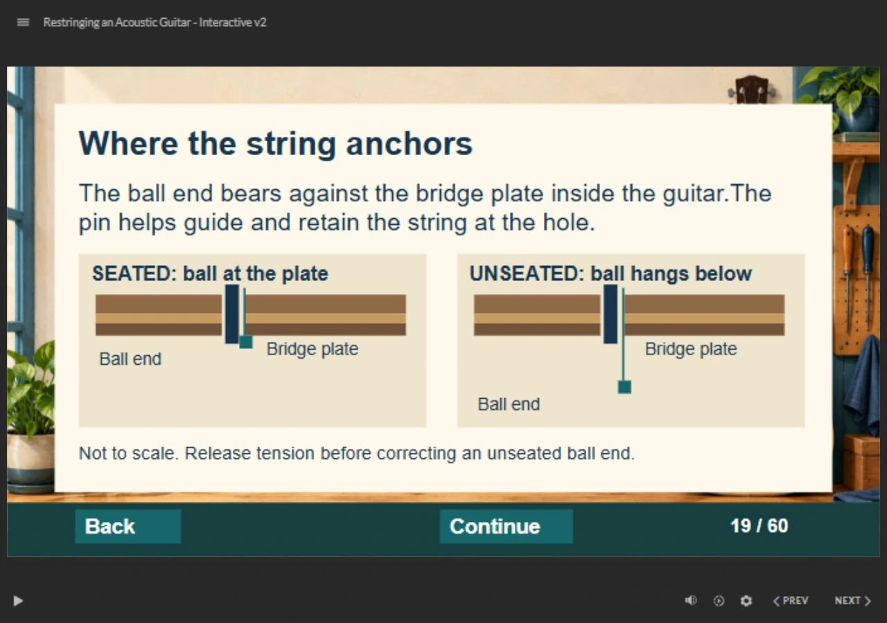
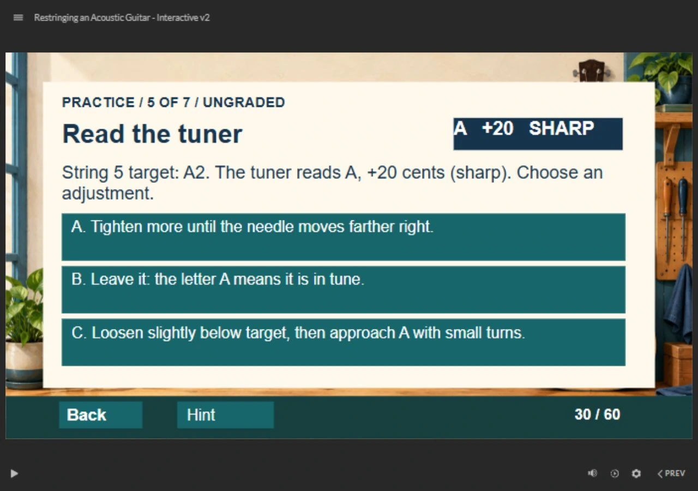

{kind=link}
Prepare and sequence
Select a suitable workbench kit, choose controlled removal steps, and order installation actions.
Procedural learning · Articulate Storyline
Help a beginner recognize what is happening inside the instrument—and choose a reasoned next step.
My role Lesson sequence, decision tasks, feedback, and practical assessment.
Download editable Storyline source (.story)
Browser lesson available · Full assessment and accessibility validation in progress

A short look inside · Actual browser recording
The learner sees an A at +20 cents, chooses an adjustment, and uses targeted feedback to try again.
This silent, captioned walkthrough shows one practice route. Use the full lesson to explore the other choices.
Try the full lesson →I shaped the lesson sequence, decision tasks, feedback, and practical assessment. The core design decision is to assess two different things: what a learner can recognize in a scenario, and what they can demonstrate on an instrument.
The browser lesson and editable source let a reviewer inspect the implementation. The checklist makes the intended physical performance observable; it does not establish that learners have achieved it.
The 60-slide lesson includes seven ungraded mini tasks, eight decision screens and a 20-question knowledge check. Choice-specific feedback explains the consequence and supports another attempt.
Select a suitable workbench kit, choose controlled removal steps, and order installation actions.
Respond to a rising bridge pin, interpret a sharp tuner reading, and investigate persistent slipping pitch.
Approve a preparation plan, inspect the result, then demonstrate a string change with an experienced observer.

An editable cross-section compares a seated ball end with one hanging below the bridge plate. The associated task asks learners what to do when the bridge pin rises during winding.

The tuner task presents A at +20 cents. Learners choose an adjustment and receive feedback about pitch direction and checking the target octave.

The quiz uses a 160/200 passing threshold. Physical skill is assessed separately: an observer records independent, prompted or not-yet performance for preparation, removal, seating, routing, winding, tuning and final inspection.
Download the practical checklist
Audience and scope: beginners using a six-string steel-string acoustic with a pin bridge and ordinary tuning posts. Hardware-specific preparation and winding follow the instrument maker's guidance.
The revision replaces passive reveals with decisions, adds targeted feedback and retry routes, and makes the final demonstration observable. Offline checks covered package structure, all 24 choice routes and custom-score simulations at 200, 160, 150 and 0 points, including retry and duplicate-award guards. Approximate layout review found no remaining estimated text overflow.
The revised source opened and exported successfully in Storyline. Complete assessment, keyboard operation and screen-reader checks remain pending. No learner-outcome study is claimed.